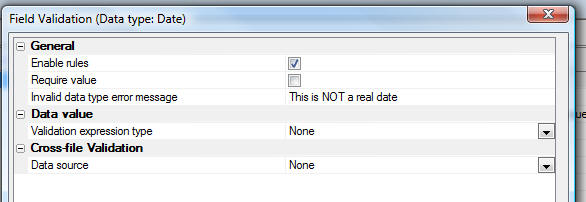

Grid Component - Field Validation - New Rule Type
A new rule type has been added for all fields other than character fields. The 'Invalid data type error message' rule allows you to define a message that will display if the user types in an invalid date, time, short time, or number into an input field.